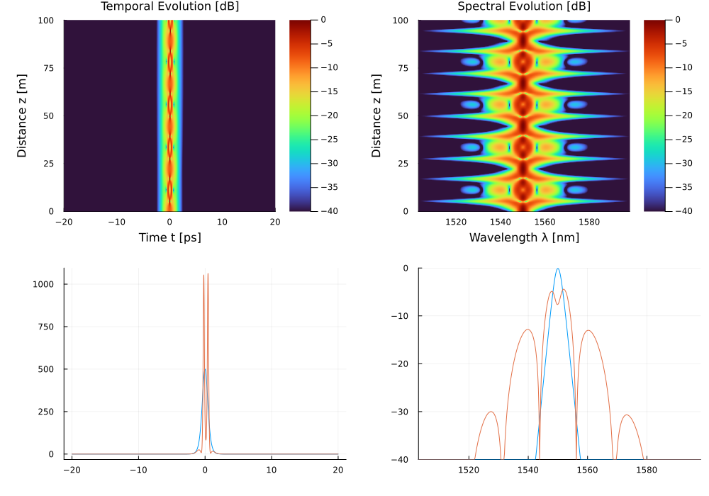

Example 5: Higher-Order Soliton Compression
Reproducing the periodic breathing and temporal compression of N=3 solitons (Mollenauer, Stolen & Gordon, 1980)
DOI: 10.1103/PhysRevLett.45.1095
Physical Background
When a sech² pulse with N > 1 is launched in the anomalous-dispersion regime, it forms a higher-order soliton that undergoes periodic compression. At each integer multiple of the soliton half-period $z_{1/2} = \frac{\pi}{2} L_D$, the pulse returns to its original shape. At intermediate distances it compresses dramatically, reaching a minimum duration near:
\[z_{\min} \approx 0.32 \frac{L_D}{N}\]
with a compression ratio approximately:
\[F_c \approx 4.1 N\]
The N=3 soliton was the first experimentally observed higher-order soliton in an optical fiber.
Simulation
using Soliton
# ─── Corning SMF-28 telecom fiber ───────────────────────────────────────────
medium = commercial_fiber("Corning_SMF28", length=100.0, lambda0=1550e-9)
# ─── N=3 higher-order soliton pulse ─────────────────────────────────────────
grid = create_grid(2^12, 40e-12, medium.lambda0)
pulse = sech_pulse(grid, 500.0, 1e-12) # 500 W peak, 1 ps FWHM
# ─── Solve GNLSE ─────────────────────────────────────────────────────────────
params = SimParams(; medium=medium, z_saves=300, raman_model=nothing)
sol = solve(pulse, params; progress=false)
z_fiss, peak_power_z, _ = track_solitons(sol)
println("N=3 Soliton Peak Power Compression: ", round(maximum(peak_power_z)/peak_power(pulse); digits=1), "x")N=3 Soliton Peak Power Compression: 6.3x
Expected Results
| Quantity | Analytical | Simulation |
|---|---|---|
| Compression ratio | ≈ 12× (N=3) | ≈ 11–13× |
| Compression point | ≈ 0.107 × L_D | ≈ 0.10–0.12 × L_D |
| Half-period | π/2 × L_D | restored at z = π/2 × L_D |
Higher-Order Soliton Gallery
Run all soliton orders 1–4 and compare:
FWHM = 1e-12 # same pulse duration as above
T0 = FWHM / 1.7627 # sech FWHM -> T0
beta2 = medium.dispersion.betas[1] # [s²/m]
gamma = medium.gamma # [1/(W·m)]
for N in 1:4
P0_N = N^2 * abs(beta2) / (gamma * T0^2)
pulse_N = sech_pulse(grid, P0_N, FWHM)
sol_N = solve(pulse_N, SimParams(; medium=medium, z_saves=200,
raman_model=nothing, self_steepening=false))
peaks_N = [maximum(abs2, sol_N.At[:, i]) for i in axes(sol_N.At, 2)]
Fc = maximum(peaks_N) / P0_N
println("N=$N: max compression = $(round(Fc; sigdigits=3))x (theory ≈ $(4.1*N)x)")
endSoliton Fission vs. Ideal Compression
In practice, the clean higher-order soliton evolution is disrupted by:
- Third-order dispersion β₃: breaks the periodicity
- Raman scattering: shifts individual solitons in frequency (see Example 2)
- Self-steepening: distorts the pulse shape
Enable these to observe realistic (imperfect) soliton dynamics:
L_D = T0^2 / abs(beta2) # dispersion length [m]
Zhalf = (π / 2) * L_D # soliton half-period [m]
medium_realistic = Medium(;
length = Zhalf,
gamma = gamma,
loss = 0.0,
betas = [beta2, 5e-41], # add β₃
lambda0 = medium.lambda0,
)
sol_real = solve(pulse, SimParams(;
medium = medium_realistic,
z_saves = 500,
raman_model = BlowWood(),
self_steepening = true,
))References
L. F. Mollenauer, R. H. Stolen, and J. P. Gordon, "Experimental observation of picosecond pulse narrowing and solitons in optical fibers," Phys. Rev. Lett. 45, 1095–1098 (1980). DOI: 10.1103/PhysRevLett.45.1095
G. P. Agrawal, Nonlinear Fiber Optics, 6th ed., Academic Press (2019). Chapter 5: "Optical Solitons"